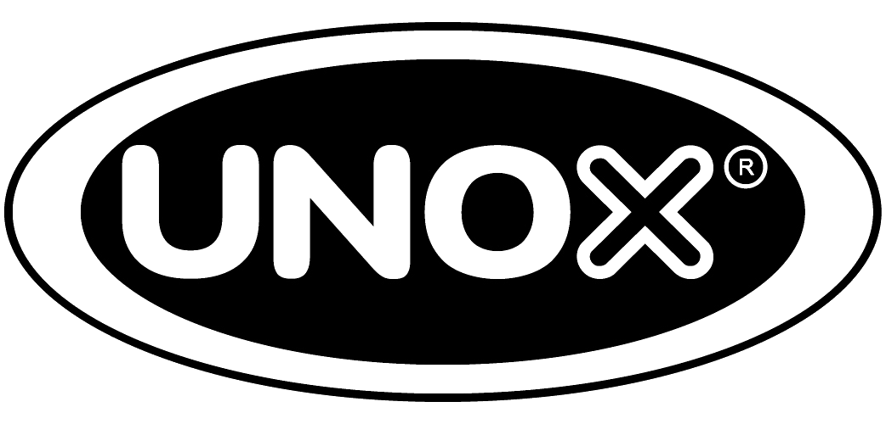

Service Oficial UNOX
Asistencia técnica y mantenimiento especializado para toda la línea de equipos UNOX.
Ingeniería eléctrica y electrónica
Somos especialistas en provisión, instalación, puesta en marcha y mantenimiento de suministros eléctricos y electrónicos. Service oficial UNOX.

Nuestros servicios
Service oficial, mantenimiento y soluciones integrales para operaciones gastronómicas e industriales.

Asistencia técnica y mantenimiento especializado para toda la línea de equipos UNOX.
Servicio técnico y comercialización de creperas Condorman para gastronomía profesional.
Puesta al día, mejora de rendimiento y actualización tecnológica de hornos industriales.
Implementación técnica integral de centros gastronómicos llave en mano.
Intervenciones técnicas personalizadas según los requerimientos específicos del cliente.
Soporte preventivo y correctivo en base a diagnóstico y mejora continua.
Mantenimiento preventivo
Nuestro servicio comienza con un relevamiento para que conozcas con precisión las problemáticas y aspectos a mejorar de tu infraestructura. Luego realizamos un diagnóstico general, proponemos un plan de mejoramiento y definimos un compromiso de soporte preventivo y correctivo.
Alcance y modalidades
Para todos aquellos clientes que no están adheridos al servicio de asistencia técnica mensual, les brindamos la posibilidad de ser asistidos abonando sólo por los servicios prestados cuando se presente un problema, se requiera asesoramiento o ante cualquier inquietud que pueda surgir.
Modalidad 01
Para resolver problemas sencillos en forma inmediata, sin costo de traslado.
Modalidad 02
Asistencias de mayor complejidad que requieren presencia física de nuestro personal técnico en tu ubicación.
Modalidad 03
Cuando las tareas necesitan equipamiento especializado, las trasladamos a nuestro taller o derivamos a empresas asociadas.
Línea Condorman
Servicio de creperas Condorman incluido dentro de nuestros servicios gastronómicos. Venta, instalación y mantenimiento.

Consultanos por nuestros servicios de mantenimiento, instalación y asistencia técnica. Respondemos en menos de 24 horas.